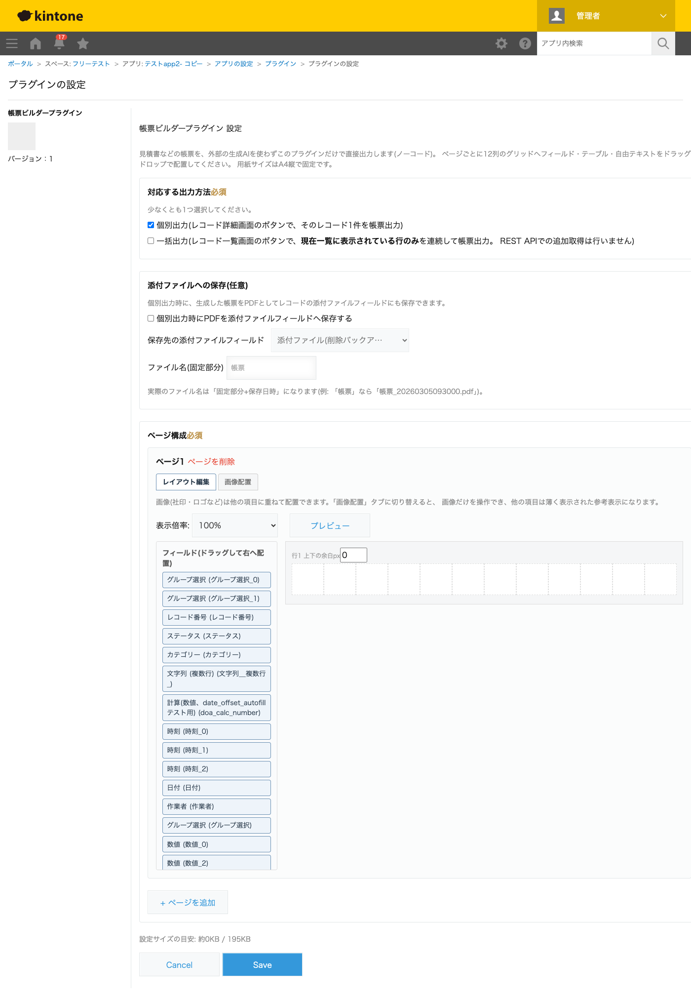

GovAppsプラグイン 安全性を確認できる無料kintoneプラグイン集
kintoneのレコード情報をもとに、見積書・請求書・発注書などの帳票をノーコードで作成できる プラグインです。設定画面はkintoneのフォーム設定画面と同じように左にフィールド一覧・右に 配置キャンバスを並べたレイアウトで、フィールドをA4サイズの12列グリッドへドラッグ&ドロップ するだけでレイアウトを組み立てられます。数値・計算フィールドは単位表示や桁区切りをフィールド ごと(サブテーブルの列ごと)に設定でき、社印・ロゴの画像を他の項目に重ねて配置することも できます。個別出力(レコード詳細画面のボタン)・一括出力(レコード一覧に表示中の行をまとめて 出力)に対応するほか、生成したPDFをレコードの添付ファイルフィールドへ自動保存することも できます(任意)。外部の生成AIは一切使わず、プラグイン自身が帳票を直接描画します。
取引先名・見積日・金額などのフィールドと、明細用のサブテーブルをA4サイズの12列グリッドへドラッグ&ドロップで配置するだけで、見積書・請求書・発注書のレイアウトを組み立てられます。文字サイズ・折返し・文字位置(左/中央/右)・枠線の有無は項目ごとの歯車アイコンから設定でき、レコードに紐付かない社名・見出しなどの固定文言は「自由テキスト」項目として自由な位置に配置できます。
サブテーブル内の数値・計算フィールド(単価・数量・小計など)は、通常のフィールドと同じように列ごとに単位表示("円"「個」など、kintone側のフィールド設定を踏襲)・桁区切り(1,000円のようなカンマ区切り)を選べます。単位・桁区切りの設定は、保存(Save)ボタンを押すたびに最新のkintoneフィールド定義で自動的に同期されるため、後から単位を追加・変更した場合も設定を保存し直すだけで反映されます。
個別出力時に、生成した帳票をPDFとしてレコード自身の添付ファイルフィールドへ保存できます(任意機能)。ファイル名は「固定テキスト+保存日時」で自動的に組み立てられ、固定テキスト部分は設定画面で自由に決められます。既に添付されているファイルは残したまま追加されるため、見積り改訂のたびにPDFを蓄積していく、といった使い方もできます。
用紙サイズはA4縦で固定です。一括出力はレコード一覧に現在表示されている行のみが対象で、絞り込み条件に一致する全件をREST APIで追加取得することはありません。テーブルを添付ファイルへのPDF保存機能で複数ページにまたがるほど長くした場合、2ページ目以降でテーブルのヘッダー行が繰り返されない既知の制限があります(ブラウザの「帳票を出力」からの印刷では繰り返されます)。
kintoneセキュアコーディングガイドラインに沿って実装時にチェックしています。特に重要な点は次のとおりです。
desktop.js)はREST APIを一切使用せず、JavaScript APIのみで実装しています。一括出力もレコード一覧に現在表示されている行(event.records)のみを使い、絞り込み条件に一致する全件をREST APIで追加取得することはありません。kintone.api()(kintone自身への呼び出し専用の内部ラッパー)で1回だけ取得します。生のfetch/XMLHttpRequestは使用していません。textContentへの代入のみで行い、文字列結合によるinnerHTMLは一切使用していません。kintone.api()非対応と明記されているため、この1箇所のみ同一オリジンへのfetchを直接使用し、CSRFトークンを付与しています。<img src="...">は、選択したファイルをFileReaderと<canvas>で自前で再生成したdata URLのみを使い、外部URLや任意のバイト列がそのままsrcに渡ることはありません。詳細な確認項目・確認日は下記GitHubのチェックリストに全項目を掲載しています。

個別出力・一括出力ともに、実際の帳票描画はJavaScript APIのみで行うためREST APIは使用しません。
config画面(設定時のみ)は、右側のプレビュー表示のために最新レコード1件をkintone.api()で
1回だけ取得します。添付ファイルへの保存機能を有効にした場合のみ、「PDFを添付ファイルに保存」ボタンを
押すたびに、ファイルアップロードAPIとレコード更新API(1件)をそれぞれ1回ずつ実行します。